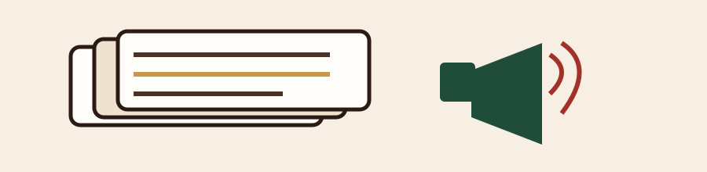

Noche de catas abierta al público
Este viernes abrimos la barra para una cata guiada con clientes frecuentes. Se necesitan dos partners voluntarios en el turno de la tarde.
Comunicados internos
Todo lo que pasa en GROUNDS: eventos, productos nuevos y reconocimientos a partners, en un solo tablón.

Este viernes abrimos la barra para una cata guiada con clientes frecuentes. Se necesitan dos partners voluntarios en el turno de la tarde.
Llega un tueste medio con notas a caramelo y cítricos. Ya está disponible la ficha técnica en Cursos → Café y Origen.
Por su iniciativa entrenando a los nuevos ingresos en arte latte. ¡Felicidades, Javier!
Abren cupos para el programa avanzado de catas. Inscripciones en Cursos, con tu líder de tienda.
A partir de esta semana, la leche de avena es una opción estándar en todas las tiendas. Revisa la calculadora de bebidas en Recetario.
Todo el equipo de la tienda Centro cumplió cinco años trabajando junto. Un brindis (con café, claro) para ellos.
No encontramos noticias que coincidan con tu búsqueda.